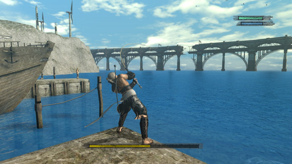
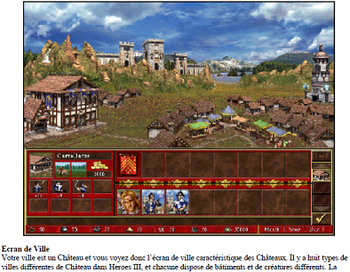
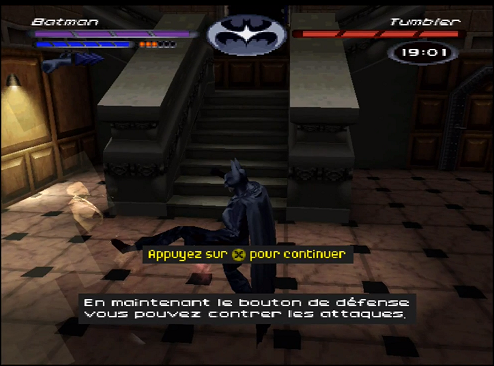
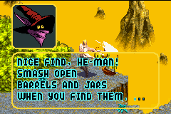

Huit façons de faire un mauvais tutoriel
L'article original est écrit par Ernest Adams publié par Gamasutra (juin 2011).
L'auteur original n'est en aucun cas reponsable de la précision de cette traduction.
À l'aube de l'industrie du jeu, il y avait des jeux vidéo (sur console ou arcade) et des jeux sur ordinateur. Avec les jeux vidéo, vous vous retrouviez directement dans le grand bain : seul face à une horde d'ennemis avec très peu d'instructions, soit vous couliez soit vous nagiez. La plupart du temps vous couliez, ce qui constituait par ailleurs la source de revenus des salles d'arcade.

Les jeux sur ordinateur étaient plus complexes que les jeux d'arcade, c'est pourquoi des manuels étaient fournis aux joueurs avant de commencer à jouer. De nos jours, on s'attend à ce que les joueurs ne lisent pas le manuel, du coup, il leur faut un tutoriel à la place. Les tutoriels présentent au joueur l'interface et le gameplay. Ils doivent expliquer au joueur comment interagir dans l'univers du jeu, comment atteindre l'objectif principal, et (brièvement) pourquoi.
Récemment, j'ai eu le privilège de siéger en tant que juré à l'Extra Credits Innovation Awards, ce qui signifiait que je devais jouer – et donc, apprendre à jouer à plusieurs jeux rapidement.
Un ou deux tutoriels étaient si mauvais que j'ai décidé que nous ferions mieux d'en parler. Les mauvais manuels et/ou les mauvais tutoriels sont déjà des TDC [NDT : Twinkie Denial Condition, voir articles précédents de la série], mais les « Vilain Game Designer, Pas de Biscuits pour toi ! » que j'ai publiés ne sont pas aussi détaillés que ça.
Les tutoriels existent pour enseigner des choses au joueur, et les game designers ne sont pas des enseignants par nature. Nous somme habitués à créer des challenges, pas à en expliquer les principes. Pendant la majeure partie du jeu, on attend des joueurs qu'ils apprennent par eux-mêmes grâce à l'observation et à l'expérimentation.
Comme l'a souligné Raph Koster, la partie la plus fun du gameplay est d'apprendre à maîtriser le jeu, mais ce procédé est inefficace. Les tutoriels ne doivent pas fonctionner comme ça. Ils doivent expliquer aux joueurs ce qu'il faut faire et leur montrer ce qui se passe à l'écran quand ils font quelque chose. Il faut laisser les joueurs maîtriser les bases du jeu – les guider dans le petit bain plutôt que de les faire plonger dans l'inconnu. Mais j'ai récemment découvert qu'il y a plusieurs manières de mal le faire. En voici quelques unes.
Forcer le joueur à faire le tutoriel.
À chaque fois qu'un joueur tombe sur un game over, faites-lui refaire le tutoriel. Même s'il y a déjà joué une douzaine de fois auparavant. Lapidez-le à coup d'explications sur des choses qu'il sait déjà. Irritez-le avec des défis inutilement ennuyeux. Faites-lui perdre 10 ou 20 minutes de son temps avant qu'il puisse s'amuser à nouveau.
Les jeux contiennent souvent des tutoriels inévitables parce qu'ils sont intégrés dans le premier voire le deuxième niveau. Ce n'est pas mauvais en soi si le joueur peut sauter les conseils, ou les interrompre. Mais inonder le joueur d'une montagne d'informations qu'il connaît déjà est fastidieux et ennuyeux.
La solution la plus simple pour résoudre ce problème est de rendre le tutoriel optionnel, de le séparer du jeu en lui-même. Ça fonctionne pour beaucoup de concepts de jeux. Que ce soit des soldats, des athlètes, des pilotes, ou dans notre cas, des rois et des urbanistes ; tous ont besoin d'une formation avant qu'ils puissent faire leur vrai travail. Si vous voulez vraiment que votre tutoriel fasse partie du jeu principal, assurez-vous que le joueur ait la possibilité de passer les instructions afin qu'il puisse jouer au vrai jeu immédiatement.
Donnez au joueur beaucoup de lecture.
Donnez-lui des pages et des pages et des pages de notice d'utilisation à lire, en ne lui laissant rien faire d'autre que d'appuyer sur un bouton pour passer d'un texte à un autre. Écrivez-le avec un langage pseudo-médiéval rempli d'anachronismes, ou pire encore, dans un monologue dicté par un personnage mentor ennuyeux avec beaucoup de propos irritants. (« Le bouton A permet de brandoir vostre épée! Essayez maintenant. Oui, cela est fort bien. ») Affichez le tout avec une police de caractères moche qui a été initialement prévue pour les titres ou les sous-titres, mais pas pour les paragraphes.
J'ai joué une fois a un jeu japonais où le tutoriel consistait à appuyer sans arrêt sur un bouton pour faire défiler le texte pendant 10 minutes. Bien sûr, une fois arrivé à la fin, j'en avais oublié la moitié. Les joueurs s'en souviendront mieux s'ils apprennent par la pratique.
Tant que j'y suis, ne faites pas lire au joueur une énorme quantité de texte sur ce qui s'est passé dans l'histoire non plus. Le défilement du générique d'introduction du tout premier Star Wars ne dure qu'une minute et 14 secondes, de « C'est une époque de guerre civile » à « restaurer la liberté dans la galaxie ». Si c'était suffisant pour George Lucas, c'est suffisant pour vous. Laissez les joueurs découvrir le reste du background par eux-mêmes.

Mauvaise description des boutons et des éléments de menu.
Vous pouvez rendre votre tutoriel encore plus agaçant en incluant des références à un bouton sans clairement l'identifier. Par exemple, dire « Appuyez sur le bouton Vendre situé en haut à gauche de l'écran » quand il y a cinq boutons différents à cet endroit et qu'aucun d'entre eux ne s'appelle Vendre. De même, dites-leur de choisir l'élément X du menu quand cet élément X du menu n'est pas visible. Mettez cet élément X du menu un ou deux niveaux plus bas dans l'arborescence sans aucune instruction pour pouvoir le trouver.
Les boutons avec des icônes dessus prennent bien moins de place à l'écran que ceux avec du texte, et ils n'ont pas autant besoin d'être signalés, c'est donc généralement une bonne idée. Cependant, le joueur a besoin d'apprendre ce que le bouton signifie et ce qu'il fait, et le tutoriel doit le montrer.
Quand votre texte se réfère à un bouton, profitez-en pour mettre en évidence ce bouton à l'écran – mettez une lueur dorée tout autour ou quelque chose comme ça, et faites-le avec un effet pulse ou flash.
Si vous voulez faire référence à quelque chose qui se trouve dans l'arborescence du menu, assurez-vous d'indiquer clairement le chemin. Ne dites pas : « Vous pouvez le trouver dans l'onglet Graphiques du menu de personnalisation », mais dites : « Sélectionnez Aide > Préférences > Personnaliser et choisissez l'onglet Graphiques ». Ça peut sembler évident, mais vous seriez surpris de voir que peu de jeux le font.

Sauter les étapes.
Faites faire au joueur un tutoriel avec des étapes, et brutalement, en plein milieu, arrêtez de lui donner des instructions. Laissez-le en plan face à un écran rempli de boutons et de menus en faisant en sorte qu'il n'ait aucune idée de ce qu'il est censé faire. Quand il essaye de faire quelque chose après un moment d'hésitation, affichez à nouveau des instructions mais qui n'ont aucun rapport avec ce qu'il vient de faire.
Certains tutoriels ont besoin d'être plus approfondis que d'autres. Plus le jeu est inhabituel, ou le genre obscur, plus vous devez expliquer ce qui se passe. Je ne suis pas contre les tutoriels limités, mais contre les tutoriels qui commencent par fournir des explications et qui soudain disparaissent ensuite. Quel que soit le nombre d'explications, vous devez en mettre jusqu'au bout.
Punissez le joueur inexpérimenté.
Quand le joueur fait la moindre erreur, ramenez-le en arrière et réexpliquez-lui tout dans les moindres détails – ou faites en sorte qu'il revienne en arrière lui-même. Faites monter son niveau de frustration en le punissant de petites erreurs qu'il aura accumulées.
Quand j’essaie d'apprendre comment sauter dans un jeu, s'il y a bien une chose que je déteste c'est de tomber dans un trou profond où il me faut deux bonnes minutes pour remonter avant de pouvoir tenter le saut à nouveau. C'est assez mauvais dans un gameplay normal, mais c'est inexcusable dans un tutoriel.
Quand un joueur rate son saut, ou toute autre action de ce genre, il doit être en mesure de pouvoir réessayer immédiatement.
Un des jeux auquel j'ai joué lors de l'Innovation Awards était un tutoriel dans lequel vous perdez ! Le but que j'essayais d'atteindre n'était pas très clair, mais j'ai essayé de faire ce qu'on me disait, et à la fin, ça me disait que j'avais perdu. Je peux difficilement imaginer un début de jeu plus décourageant. Finir le tutoriel devrait donner au joueur un sentiment de satisfaction. Si le joueur échoue dans le tutoriel, alors le tutoriel lui-même est un échec.
Baby-sittez ou humiliez votre joueur.
Dites au joueur « Très bien ! » avec une voie exagérément guillerette quand il a parfaitement compris comment faire pour appuyer sur la touche Entrée. Faites-le à chaque fois qu'il fait ça. Glorifiez-le comme vous le feriez à un enfant de quatre ans qui vient d'apprendre comment boutonner sa propre chemise. D'un autre côté, humiliez votre joueur quand il fait quelque chose de mal. Dites-lui à quel point il est nul. Les nouveaux joueurs adorent être sévèrement critiqués pour ne pas savoir ce que le tutoriel est censé leur apprendre.

Ce point ne nécessite pas plus d'explications. Un tutoriel, émotionnellement parlant, devrait être positif et encourageant sans être condescendant. Dans la vie, la critique constructive est utile, mais il ne faut pas en abuser.
Forcez le joueur à faire tout le tutoriel.
Il est possible que durant votre tutoriel, le joueur sente qu'il a compris ce qu'il faut faire et qu'il soit prêt à aller de l'avant, et donc à commencer le jeu. Oh, non. Pas de chance. Vous avez fait tellement d'efforts dans ce tutoriel et il va devoir le finir qu'il le veuille ou non. Après tout, c'est votre jeu, pas le sien.
Si vous avez un niveau qui est entièrement un tutoriel, laissez le joueur le quitter pour qu'il puisse passer à autre chose. Si votre tutoriel est intégré dans un niveau ordinaire, laissez le joueur sauter les passages du tutoriel.
Et pour finir…
Ne leur donnez pas de tutoriel du tout.
Concevez ce que vous pensez être une interface totalement intuitive et ingénieuse, de préférence sans HUD et autres indicateurs à l'écran qui empêchent le joueur de s'immerger complètement dans votre magnifique univers. Faites-le apparaître clairement sans qu'il y ait besoin d'instructions. Jetez-les dedans et souhaitez-leur bonne chance.
Un des jeux que j'ai eu à juger à l'Innovation Awards faisait exactement ça. L'interface utilisateur m'a écœuré – un jeu en 3D à la première personne où la vue bougeait comme si j'étais ivre, apparemment des efforts ont été fait pour transmettre l'idée que mon avatar se sentait malade et désorienté. Ça marchait si bien que je ne m'y suis pas attardé. Il m'a aussi fallu cinq minutes d’expérimentations avec cette interface utilisateur sot-disant intuitive rien que pour savoir comment ouvrir une porte.
L'interface utilisateur entièrement intuitive a été le Saint-Graal de l’interaction homme-machine pendant des décennies. Je vais être franc : ça n'existe pas. Sauf si vous faites un jeu sur ordinateur sur comment utiliser un ordinateur, les périphériques d'entrée de la machine ne sont pas susceptibles de correspondre à l'activité du monde réel que le jeu simule.
J'ai travaillé sur Madden NFL aussi loin que remonte l'ère de la Sega Genesis, et je peux vous dire que choisir un type de jeu, puis taper dans le ballon, le passer à un coéquipier, l'attraper et courir avec, ce n'est pas rien avec trois boutons et une croix directionnelle. Nous avions réussi – mais nous avions encore à écrire le manuel du jeu. Il n'y avait pas assez de place dans une cartouche de Genesis pour un tutoriel.
L'arrivée de la Wiimote et, plus récemment, de Kinect remet en avant ce sujet, et certaines personnes sont très enthousiasmées par des interfaces du style Minority Report. Ces gens ont oublié – ou n'ont probablement jamais su– pourquoi la souris d'ordinateur a été inventée avant le reste. Les écrans tactiles sont épuisants à utiliser à la longue, car il faut garder le bras levé tout le temps. Bouger ses bras dans tout les sens, comme dans Minority Report, est encore plus fatiguant. Ça a l'air très excitant et cool, mais on ne peut pas faire ça pendant des heures en fin de compte.
Les joueurs n'ont pas besoin d'un tutoriel s'ils disposent d'un équipement spécial, bien sûr – une manette de jeu haut de gamme pour les simulateurs de vol (mais ils vont encore appuyer sur une touche du clavier pour faire sortir le train d'atterrissage), ou les Bongos DK pour jouer à Donkey Konga. Mais vous ne pouvez pas compter sur le fait que le joueur possède son propre équipement, à moins que vous ne les fournissiez avec le jeu, et ceci signifie qu'il a toujours besoin d'un tutoriel ou d'un manuel pour une manette ordinaire.
En d'autres termes, votre interface utilisateur doit associer les contrôles de la machine à l'univers du jeu et en à un moment ou un autre, d'une façon ou d'un autre, vous allez devoir expliquer ces associations. Et votre interface ne sera certainement pas aussi intuitive que vous le pensez. Vous jouez à votre propre jeu pendant des mois ou des années, ça devient une seconde nature pour vous, mais pour les joueurs, c'est nouveau. Ils ont besoin d'un tutoriel. J'insiste.
Conclusion
Certains d'entre vous ont sans doute remarqué que ce n'est pas une critique très constructive. J'ai identifié un bon nombre de choses à ne pas faire, mais je n'ai pas expliqué comment faire un bon tutoriel. C'est parce qu'il est très difficile de créer des règles générales dans un domaine aussi diversifié que le nôtre. Un tutoriel pour un jeu de tir sera forcément différent de celui d'une simulation de construction et de gestion. Le seul conseil positif que je peux vous offrir et qui couvre tout les cas de figure est : assurez-vous de faire tester votre tutoriel par des personnes qui sont complètement novices – et profitez en pour leur faire tester le jeu complet, tant qu'on y est.
Ajouter un commentaire
Commentaires

J'ai bien aimé cet article. Instituteur retraité, j'ai apprécié la justesse de la critique. Je me trouve actuellement bloqué dans mon désir d'utiliser Blender pour créer des personnages en 3D, mais les tutos sont inassimilables: mauvaise définition de l'image, commentaires qui ne suivent pas l'image, pointeur qui se promène dans l'interface, à tel point que j'ai décidé de me créer un tuto net et propre, en prenant par ci par là des éléments qui me font avancer, pas m'ennuyer, exactement comme je préparais mes cours. Merci.
Resident Evil 4 est un des jeux récents en 3D qui a été un succès et ne comporte pas de tutoriel type "next gen". Il est fait de manière invisible à l'ancienne, comme les premiers jeux de la franchise. Un bon jeu, même aujourd'hui, complexe, peut être fait sans tutoriel qui ressemble à un cours d'école, ce jeu en est la preuve.
Super choix d'article, merci pour la traduction ! R3d
Très intéressant développement sur cette partie d'un jeu vidéo trop souvent négligée ou mal pensée… Merci pour cette "étude".